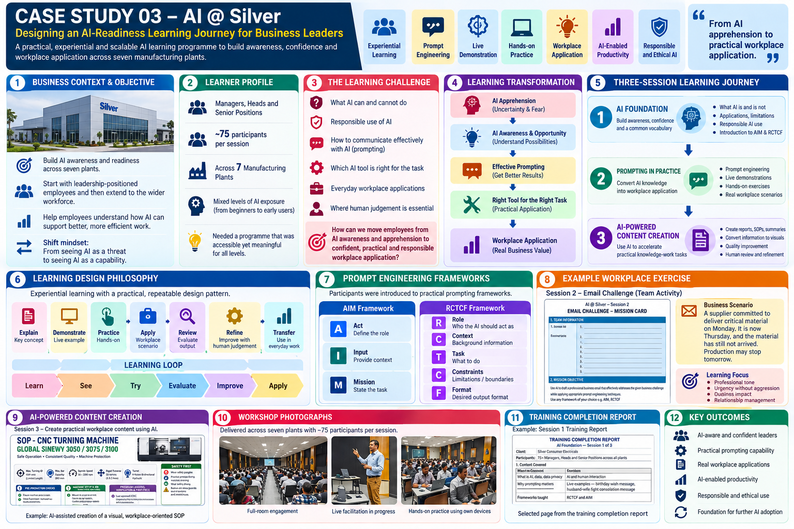

AI @ Silver — Designing an AI-Readiness Learning Journey for Business Leaders
A practical, experiential and scalable AI learning programme designed to build awareness, confidence and workplace application across seven manufacturing plants.
From AI apprehension to practical workplace application
Silver Engineering wanted to build AI awareness and readiness across its workforce, beginning with leadership-positioned employees across its plants and subsequently extending the initiative to the wider workforce. The objective was not simply to introduce employees to AI tools, but to help people understand how AI could affect their work, reduce apprehension about AI-driven workplace change, and develop confidence to use AI constructively in everyday responsibilities.
Scale
Delivered across seven plants, with approximately 75 participants per session.
Audience
Leadership-positioned employees with mixed seniority and mixed levels of prior AI exposure.
Three connected sessions
Experiential learning rather than an AI lecture
The programme used a recurring design pattern:
AI generates; humans evaluate, decide and refine.
InfoGraphic Map
The infographic summarizes the business context, learner profile, learning challenge, transformation, three-session journey, prompting frameworks, workplace exercise, AI-powered content creation, delivery evidence and intended outcomes.

Evidence available for public portfolio use
Selected artifacts can demonstrate the learning design without exposing confidential company information.